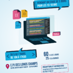
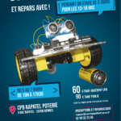
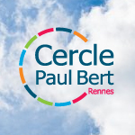

Accueil
L’association
Le Cercle aujourd’hui
L’historique du Cercle Paul Bert
Conseil d’administration
Toutes les activités
Les activités par quartiers
Actualité
CPB Blosne Pôle Landrel
CPB Blosne Pôle Savary
CPB Bréquigny
CPB Cleunay
CPB Centre
CPB Gayeulles
CPB Ginguené
CPB Longs Champs
CPB Nord-Ouest
CPB Rapatel-Poterie
CPB Villejean
Vacances scolaires
Stages et mini-camps
Agenda
Recrutement
Inscription 2023-2024
Contacts
CPB Siège
CPB Blosne Pôle Landrel
CPB Blosne Pôle Savary
CPB Bréquigny
CPB Centre
CPB Cleunay
CPB Gayeulles
CPB Ginguené
CPB Longs Champs
CPB Nord-Ouest
CPB Rapatel-Poterie
CPB Villejean
Organisme de formation
Espace personnel
accueil
JO 2024. Rencontrez Lucie Décosse et Jean Galfione au siège de Ouest-France à Rennes
Le mardi 12 mars prochain, après le nageur Alain Bernard venu le 26 janvier, deux nouveaux champions olympiques seront au siège de Ouest-France : Jean Galfione (sacré au saut à la perche en 1996 à Atlanta) et Lucie Decosse (sacrée en judo en 2012 à Londres). Tentez votre chance pour venir les rencontrer !
29 février 2024

Stage programmation aux Longs Champs du 5 au 7 mars 💻
Du 5 au 7 mars 2024, le Cercle Paul Bert Longs Champs te propose de découvrir la programmation ! 👉 de 10h à 17h30 👉 à l’EPI des Longs Champs, 60 rue Albert Bouzat 👉 60€ les 3 jours et 25€ la journée
26 février 2024

Stage robotique à Rapatel du 5 au 7 mars 🤖
Du 5 au 7 mars 2024, le Cercle Paul Bert Rapatel te propose de découvrir la robotique ! 👉 de 10h à 17h30 👉 au CPB Rapatel, 3 rue Rapatel 👉 60€ pour les adhérent.e.s CPB ou 90€ Fabrique et repars avec ton propre robot 😉
26 février 2024
Quartiers en Sc̬ne Рles 20 ans !
Le festival Quartiers en Scène est de retour du 15 au 29 mars 2024 ! Cette nouvelle édition marque les 20 ans du festival puisqu’il a été créé en 2004. Pour l’occasion, le comité d’animation a souhaité faire appel à des compagnies et spectacles marquants des 20 dernières années ! Le spectacle sous toutes ses formes ! Danse, musique, […]
26 février 2024

Vacances d’hiver au CPB Longchamps
Apprends à coder ! 13-18 ans Stage de 3 jours (après-midi) pour apprendre le langage Python – du 05 au 07 mars 2024EPI des Longchamps – 60 rue Doyens Bouzat
21 février 2024
CPB Blosne – Savary : Programmes Vacances d’Hiver 2024
Programme ENFANCE Programme PASSERELLE Programme JEUNESSE
21 février 2024
CPB Villejean – Vacances d’Hiver 2024
Retrouvez nos programmes pour les vacances d’Hiver 2024 !!!Pour plus d’informations : contact@cerclepaulbertasso.online – 02.99.54.10.40 / 02.99.33.72.51
15 février 2024
Vacances d’Hiver à Ginguené
Le Centre de Loisirs sera ouvert du 26 février au 8 mars 2024. Nous poursuivons notre voyage dans les anneaux olympiques et allons découvrir le continent Africain à travers sa culture, sa cuisine et ses jeux. Inscriptions du 12 au 21 février pour la 1ère semaine et du 12 au 28 février pour la 2ème […]
13 février 2024
Passerelle (10-14 ans) CPB Centre – Vacances d’HIVER du 26/02 au 8/03
📣 Demandez le programme !
12 février 2024
Accueil de loisirs CPB Centre – Vacances d’HIVER du 26/02 au 8/03 2023
Retrouvez nos programmes pour les vacances d’hiver pour les enfants âgés de 3 à 9 ans. Groupe des pirates (3-5 ans) Groupe des Koalas (6-7 ans) Groupe des Wasabis (8-9 ans)
12 février 2024